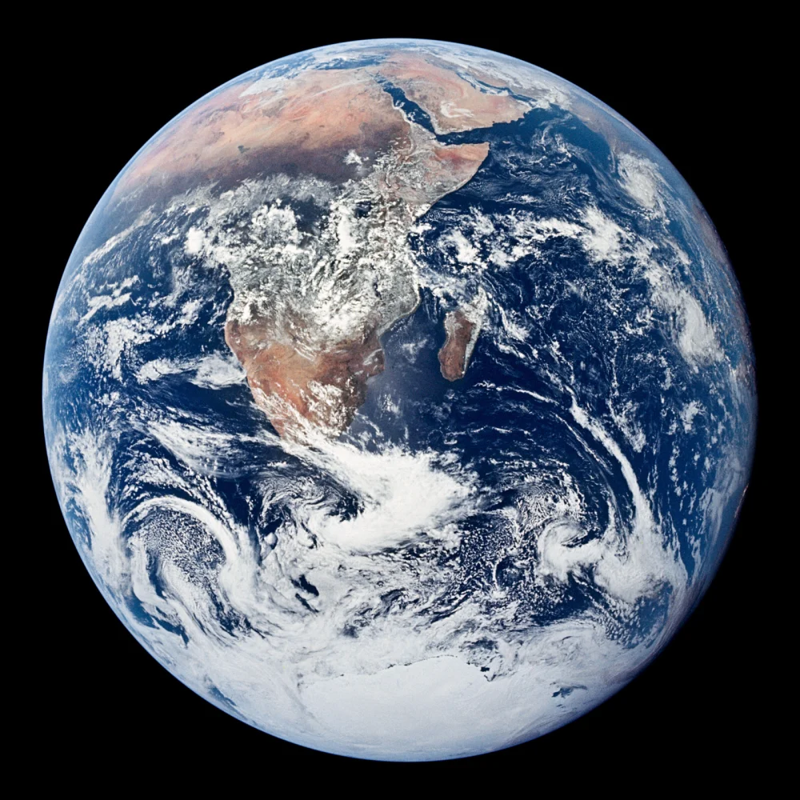

Our Solar System
Earth: the yardstick for Earth-like worlds
With a diameter of 12,756 km, Earth is the largest of the four rocky planets of the Solar System. It orbits the Sun in 365.2 days at 149.6 million km, which corresponds to one astronomical unit (AU). Its mean temperature is 15 °C. Earth is the only planet in the Solar System with liquid water on its surface and the only place known to harbor life.
For exoplanets, Earth is the yardstick: sizes and masses of small planets are given in Earth radii and Earth masses. The search for potentially habitable worlds starts with Earth-sized rocky planets in the habitable zone, where liquid water could exist on the surface.
Moons: The Moon is Earth's only natural satellite. It orbits at an average distance of 384,400 km, has a radius of about 1,740 km and stabilizes the wobble of Earth's axis. It probably formed after a Mars-sized body collided with Earth.
Sources: NASA (NSSDCA): "Planetary Fact Sheet – Metric.", accessed 2026-11-20; NASA (NSSDCA): "Planetary Fact Sheet – Ratio to Earth Values.", accessed 2026-11-20; NASA Science: "Facts About Earth.", accessed 2026-11-20; NASA Science: "Moon Facts.", accessed 2026-11-20; NASA Science: "Terrestrial.", accessed 2026-11-20; NASA Science: "The Habitable Zone.", accessed 2026-11-20